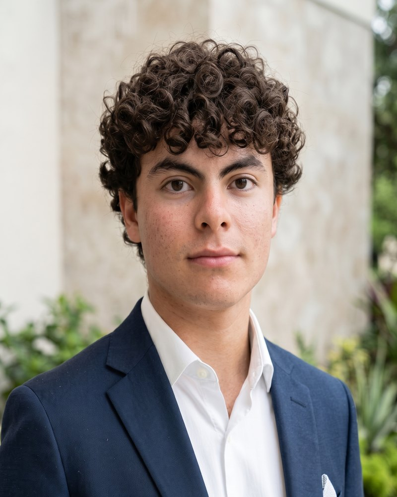
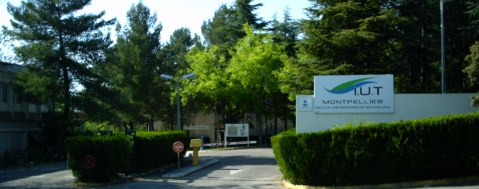
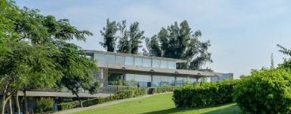

Sebastian
Étudiant en BUT GEII, parcours électronique et systèmes embarqués, à l'IUT de Montpellier-Sète. Franco-mexicain, à la recherche d'un stage de 8 semaines à partir du 3 mai 2027, à Montpellier.
Voir mes projets Voir le CV LinkedIn

Deux cultures, une même curiosité.
J'ai grandi à Guadalajara et je me forme aujourd'hui à Montpellier. J'aime comprendre comment les choses fonctionnent, de la carte électronique au code qui la fait vivre.
Langues Français : langue maternelle Espagnol : langue maternelle Anglais : B2 Allemand, italien : A1 Centres d'intérêt Escalade Natation Musique Cinéma Informations Montpellier BUT GEII, parcours ESE Stage de 8 semaines dès le 3 mai 2027 Suivant : Parcours →
Parcours
Une scolarité entre le Mexique et la France.
2025 – 2028 BUT GEII, parcours ESE IUT Montpellier-Sète · Électronique et systèmes embarqués

Jusqu'en 2025 Baccalauréat général, mention Bien Spécialités Mathématiques et Physique-Chimie · Colegio Franco Mexicano de Guadalajara, de la maternelle à la terminale

Suivant : Compétences →
Ce que je sais faire aujourd'hui.
Des acquis de BUT, que je complète en pratiquant.
Embarqué C · STM32 · bus CAN
Mesure Banc de mesure
Logiciels KiCad · MATLAB
Savoir-être Travail en équipe Curiosité Persévérance Adaptabilité
Suivant : Certification →
Certification.
B1V
Habilitation B1V — mesurage Habilitation électrique pour les interventions de mesurage en basse tension.
Obtenue en BUT 1 · 2025-2026
Suivant : Projets →
Ce que j'ai réalisé.
Les projets menés dans le cadre du BUT GEII, classés par compétence. Ouvrez un dossier pour le détail.
Concevoir & Implanter 9 projets
S3 · en cours
Enceinte connectée Bluetooth Projet tutoré, en binôme avec Eddie Fisher.
Enceinte Bluetooth d'environ 10 W, à base d'un ESP32 et d'un amplificateur intégré.
Audio Alimentation Protection
Voir le dossier
SAÉ S3 · en cours
Shield Moteur Projet en cours, en binôme.
Carte d'extension pour Nucleo F303RE qui commande un moteur à courant continu.
STM32 Bus CAN KiCad Moteur DC
Voir le dossier
SAÉ S2
Robot suiveur de ligne Zéro microcontrôleur, tout en analogique.
Conception d'un robot analogique qui suit une ligne grâce à ses capteurs.
Robotique Capteurs Analogique
Voir le dossier
SAÉ S1
Testeur de batterie Capacité, tension, résistance interne.
Conception d'un testeur de cellules, validé par des mesures à l'oscilloscope et au multimètre de précision.
Mesure Instrumentation Batterie
Voir le dossier
BUT GEII
Capteur de température PT100 Mesurer une température avec une sonde PT100.
Création d'une carte fille qui met en forme le signal d'une sonde PT100 pour qu'un microcontrôleur puisse le lire.
KiCad STM32CubeIDE Capteur
Voir le dossier
BUT 1
Soudage de la carte Jipada Première carte assemblée en BUT GEII.
Contrôle, soudure et test d'une carte qui relie un microcontrôleur à des cartes filles.
Soudure Multimètre Carte d'interface
Voir le dossier
BUT GEII
Tracker de lumière Comprendre un système, puis le programmer.
Étude d'un tracker qui suit la lumière, puis écriture du programme qui le commande.
Programmation Analyse de système Oral
Voir le dossier
BUT GEII
Transmission d'un mot de 4 bits Détecter et corriger une erreur grâce au code de Hamming.
Simulation d'une liaison sur 4 bits, d'une erreur de transmission, puis de sa correction.
FPGA Quartus Code de Hamming
Voir le dossier
BUT GEII
Commande de malaxeur Automatisme industriel sous Control Expert.
Interface de commande pour régler la vitesse, le sens de rotation et la position d'arrêt d'un malaxeur, avec affichage de la température.
Automatisme Control Expert Interface de commande
Voir le dossier
Vérifier & Maintenir 3 projets
BUT GEII
Transmission infrarouge Dépannage méthodique d'une carte.
Recherche de panne sur un encodeur infrarouge, jusqu'au remplacement du composant défectueux.
Dépannage Oscilloscope Multimètre
Voir le dossier
BUT GEII
Installation électrique d'une habitation Conformité à la norme NF C 15-100.
Étude du câblage électrique d'un logement et contrôle de sa conformité, avec un rapport.
NF C 15-100 QElectroTech Rapport
Voir le dossier
BUT 1
Dé électronique Du schéma au prototype qui fonctionne.
Conception d'un circuit électronique complet, de l'intégration des composants jusqu'aux tests.
Électronique PCB Hardware
Voir le dossier
Autres projets 2 projets
BUT 1
Carte STM32 Soudure fine et validation en C.
Assemblage d'une carte STM32 et validation de son fonctionnement en langage C.
STM32 C Embarqué Soudure
Voir le dossier
BUT GEII
Présenter l'IUT aux lycéens
Projet d'équipe pour la JPO du Lycée Jean Jaurès.
Dossier, diaporama, vidéo et oral pour présenter le BUT et le département GEII.
Travail d'équipe Communication
Voir le dossier
Suivant : Stage →
À la recherche d'un stage.
Je cherche un stage de 8 semaines à partir du 3 mai 2027, à Montpellier et alentours.
Secteurs Électronique, systèmes embarqués, instrumentation, énergie, automatisme industriel, dispositifs médicaux
Lieu Montpellier et alentours
Dates 8 semaines à partir du 3 mai 2027
Suivant : Contact →
Présenter l'IUT aux lycéens Projet d'équipe mené en BUT GEII, à l'IUT de Montpellier-Sète.
Ce que j'ai fait Rédaction de la partie « Département GEII » du dossier. Contribution au diaporama, à la vidéo et à la présentation orale. Pièces du dossier Dossier écrit : à déposer
Compétences Travail d'équipe Communication Synthèse
Fermer
Dé électronique Projet mené en BUT GEII, à l'IUT de Montpellier-Sète.
Conception d'un circuit électronique complet, de l'intégration des composants jusqu'aux tests.
Ce que j'ai fait Conception du circuit électronique complet. Intégration des composants sur la carte. Tests de fonctionnement du montage. Identification et correction des bugs électroniques. Technologies Électronique PCB Hardware
Photos La carte du dé électronique.
Pièces du dossier Cahier des charges, relevés et rapport : à déposer.
Fermer
Carte STM32 Projet mené en BUT GEII, à l'IUT de Montpellier-Sète.
Assemblage d'une carte STM32 et validation de son fonctionnement en langage C.
Ce que j'ai fait Assemblage et soudure des composants de la carte. Contrôle des connexions avant la mise sous tension. Validation du fonctionnement en langage C. Technologies STM32 C Embarqué Soudure
Pièces du dossier Cahier des charges, relevés et rapport : à déposer. Photos du projet à venir.
Fermer
Robot suiveur de ligne SAÉ de S2 (février – avril 2026), menée en équipe à l'IUT de Montpellier-Sète.
Conception d'un robot analogique qui suit une ligne grâce à ses capteurs.
Ce que j'ai fait Conception d'un robot entièrement analogique. Intégration et câblage des capteurs de ligne. Réglages électroniques fins du suivi de trajectoire. Tests sur prototype jusqu'à la validation finale. Technologies Robotique Capteurs Analogique
Pièces du dossier Cahier des charges, relevés et rapport : à déposer.
Fermer
Enceinte connectée Bluetooth Projet tutoré de S3, en binôme avec Eddie Fisher, à l'IUT de Montpellier-Sète. En cours.
Enceinte Bluetooth d'environ 10 W, à base d'un ESP32 et d'un amplificateur intégré.
Ce que j'ai fait Conception de l'enceinte, en binôme. Responsable de la protection contre l'inversion de polarité de l'alimentation. Technologies Alimentation Amplificateur audio KiCad
Photos Le modèle de carte ESP32 utilisé pour l'enceinte.
Pièces du dossier Projet en cours : schémas et rapport à venir.
Fermer
Testeur de batterie SAÉ de S1 (2025), à l'IUT de Montpellier-Sète.
Conception d'un testeur de cellules de batterie.
Ce que j'ai fait Conception d'un testeur mesurant la capacité, la tension et la résistance interne d'une cellule. Mesures à l'oscilloscope et au multimètre de précision. Rédaction du rapport technique. Technologies Mesure Instrumentation Batterie
Photos Le routage de la carte du testeur.
Pièces du dossier Rapport technique : à déposer.
Fermer
Shield Moteur SAÉ de S3, en binôme, à l'IUT de Montpellier-Sète. En cours.
Ce shield se branche sur une carte Nucleo F303RE et permet de commander un moteur à courant continu, piloté par le bus CAN.
Ce que j'ai fait Conception du shield, en binôme. Rédaction de la procédure de test de la carte. Technologies STM32 · Nucleo F303RE Bus CAN KiCad Commande moteur
Pièces du dossier Projet en cours : schémas, procédure de test et rapport à venir.
Fermer
Soudage de la carte Jipada Premier projet de BUT GEII, mené en binôme à l'IUT de Montpellier-Sète.
La carte Jipada sert de lien entre un microcontrôleur et différentes cartes filles. Ses LED affichent des informations, et ses interrupteurs et potentiomètres permettent de faire des réglages.
Ce que j'ai fait Contrôle de la continuité des pistes au multimètre, avant toute soudure. Soudure de l'ensemble des composants. Test des LED et des potentiomètres une fois la carte montée. Cette carte a ensuite servi dans d'autres projets, dont le capteur de température PT100.
Outils utilisés Multimètre Poste à souder
Fermer
Tracker de lumière Projet d'équipe mené en BUT GEII, à l'IUT de Montpellier-Sète.
Il s'agissait d'étudier le fonctionnement d'un tracker qui suit une source de lumière, d'écrire le programme qui le pilote, puis de présenter le travail à l'oral.
Ce que j'ai fait Étude du fonctionnement du tracker. Écriture du programme de pilotage. Présentation du travail à l'oral. Compétences Programmation Analyse de système Communication orale
Photos Le tracker de lumière étudié.
Fermer
Transmission d'un mot de 4 bits Projet d'équipe mené en BUT GEII, à l'IUT de Montpellier-Sète.
Le but était de construire, sur une carte FPGA Altera DE10-Lite, un système capable de corriger une erreur de transmission sur un mot de 4 bits.
Ce que j'ai fait Simulation de la transmission : le mot est réglé avec 4 interrupteurs et affiché sur 4 LED. Simulation d'une erreur : 4 autres interrupteurs permettent d'inverser le bit choisi. Correction de l'erreur grâce au code de Hamming. Outils utilisés Quartus LibreOffice Altera DE10-Lite
Photos La carte Altera DE10-Lite utilisée.
Fermer
Capteur de température PT100 Projet mené en binôme à l'IUT de Montpellier-Sète.
La tension fournie par une sonde PT100 ne peut pas être lue directement par un microcontrôleur. Il a donc fallu concevoir une carte fille qui la met en forme, puis afficher la température mesurée sur les LED de la carte Jipada.
Ce que j'ai fait Conception de la carte fille de mise en forme du signal, sous KiCad. Programmation de l'affichage de la température sur les LED de la carte Jipada. Outils utilisés KiCad STM32CubeIDE Poste à souder Multimètre Oscilloscope Notion
Fermer
Commande de malaxeur Projet mené en BUT GEII, à l'IUT de Montpellier-Sète.
Il fallait créer, sous Control Expert, une interface pour commander un malaxeur : régler sa vitesse, son sens de rotation et sa position d'arrêt, et afficher la température.
Ce que j'ai fait Création de l'interface de commande sous Control Expert. Commande de la vitesse, du sens de rotation et de la position d'arrêt. Affichage de la température sur l'interface. Outils utilisés Control Expert
Photos Le banc du malaxeur.
Fermer
Transmission infrarouge Projet d'équipe mené en BUT GEII, à l'IUT de Montpellier-Sète.
Une carte d'encodeur infrarouge ne fonctionnait pas. Les signaux ont été contrôlés un à un pour vérifier qu'ils correspondaient à ceux attendus, jusqu'à localiser la panne, puis le composant en cause a été remplacé.
Ce que j'ai fait Contrôle des signaux, étape par étape. Localisation de la panne. Remplacement du composant défectueux. Outils utilisés Oscilloscope Multimètre
Photos La carte d'encodeur infrarouge.
Fermer
Installation électrique d'une habitation Projet mené en BUT GEII, à l'IUT de Montpellier-Sète.
Ce projet consistait à étudier le câblage électrique d'un logement, puis à vérifier s'il respectait la norme NF C 15-100. Les conclusions ont été présentées dans un rapport.
Ce que j'ai fait Étude du câblage électrique du logement. Contrôle de sa conformité à la norme NF C 15-100. Rédaction d'un rapport de conformité. Outils utilisés QElectroTech
Fermer